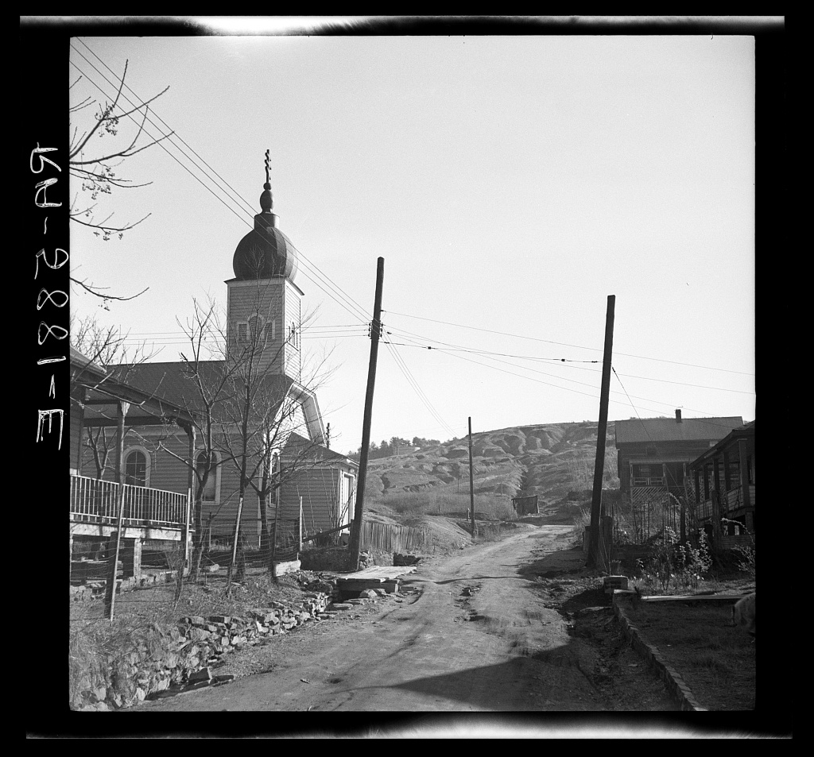

Charters and churches


This is the decade the camps turned into towns, and it happened on two fronts at once. Sloss could not find enough skilled miners in Alabama, so its recruiters went to the Austro Hungarian Empire, and Slovak and Carpatho Rusyn families arrived in Brookside through the 1890s. At Cardiff the names had come from further west: the Stewarts from Scotland, the Woodfords from Wales, the Negrons from France, and the Tombrellos from Sicily, all of them listed by name on the marker that stands in town today. Those families built what they had come from. St. Nicholas was founded in 1894, one of the first Russian Orthodox congregations south of the Mason and Dixon line, and SS. Cyril and Methodius followed in 1895, which is two churches inside two years in a town that was not yet ten years old. The paperwork caught up at the same time. Graysville incorporated in 1897 and was the first of the three to do it, Brookside followed in 1898 twelve years after its mine opened, and the Robinson Ramsey coal washer that went in at Brookside in 1897 put the mine ahead of most of what was operating around it.
What happened, and when
—- The 1890sBrooksidePeople
Sloss went to Europe for miners
Sloss could not find enough skilled miners here, so its recruiters went to the Austro Hungarian Empire. Slovak and Carpatho Rusyn families arrived through the 1890s.
- The 1890sCardiffPeople
Stewarts, Woodfords, Negrons, Tombrellos
The Stewarts came from Scotland, the Woodfords from Wales, the Negrons from France, and the Tombrellos from Sicily. The marker in town lists them by name.
- 1894BrooksideChurch
St. Nicholas is founded
The parish was founded in 1894, one of the first Russian Orthodox congregations south of the Mason and Dixon line. The building standing there today came later.
- 1895BrooksideChurch
And the Catholic parish the year after
SS. Cyril and Methodius followed in 1895. Two churches inside two years, in a town not yet ten years old.
- 1897GraysvilleGovernment
Graysville takes its charter
Graysville incorporated in 1897, the first of the three to do it.
- 1897BrooksideCoal
A coal washer at the mine
The Robinson Ramsey washer went in at Brookside in 1897, which put the mine ahead of most of what was operating around it.
- 1898CardiffTown life
The Primrose won the state cup
The Welsh and Scottish miners at Cardiff put together a football club and called it the Primrose. In 1898 it won the Alabama Foot Ball Association Cup.
- 1898BrooksideGovernment
Brookside takes its charter
Brookside incorporated in 1898, twelve years after the mine opened.
Every entry above carries the source it came from, and these are those sources in full. All of it is public material found online, so anything here can be followed back and checked. It also means that where this chapter says something is not recorded, what that really says is that it has not turned up in any of these, which is a smaller claim. If you know better, and somebody reading this probably does, it would be good to hear from you.
- Czechoslovak Genealogical Society International, Slovaks and Carpatho-Rusyns in Brookside, Alabama
- Encyclopedia of Alabama, Brookside
- Encyclopedia of Alabama, Cardiff
- Encyclopedia of Alabama, Graysville
- Town of Cardiff marker, Erected by the Alabama Tourism Department and the Town of Cardiff, May 2010
- Wikipedia, Brookside, Alabama
Fill in a gap
If you have a photograph, a date, a name, or a story about any of the three towns, send it. Corrections are just as welcome as additions, and this page gets better every time somebody who was there writes in.
fivemilec@gmail.com